Getting Started with Docker

$whoami
Principal Development Engineer at DellEMC
1
st
half of my career was in CGI & VMware
2
nd
half of my career has been in System Integration Testing
Docker Captain (since 2016)
Docker Bangalore Meetup Organizer ( 8000+ Registered Users)
DockerLabs Incubator
Ajeet Singh Raina
Twitter: @ajeetsraina
GitHub: ajeetraina

- My Personal Blog website
- Built on WordPress, Hosted on One.com
- Recently Completed 4
th
Year
- 175+ blogs on Docker | Kubernetes | Cloud
- Monthly close to 1 million visitors per month
$curl www.collabnix.com

- A Shift from Monolithic to Microservices Architecture
- Traditional Software Development Workflow(with/without Docker)
- What is Docker? What problem does it solve for us?
- Docker Vs Linux Containers
- Docker Vs Virtual Machine
- Docker Underlying Technology
- Running Your First Docker Container - Demo
- Using Docker: Build, Ship and Run Workflow - Demo
- Building Your Docker Image using Dockerfile – Demo
- Introduction to Docker Compose – Demo
- Docker Workshop
Agenda

A Shift from Monolithic to
Microservice Architecture


Let’s imagine you are building
a large, complex application,
e.g., Online Store

Successful Software Development
Architecture
Process
Organization

Successful Software Development
Architecture
Process
Organization
Small
Autonomous
team

Successful Software Development
Architecture
Process
Agile
Continuous Delivery
Organization
Small
Autonomous
team

Successful Software Development
Architecture
Monolthic Vs Microservices
Process
Agile
Continuous Delivery
Organization
Small
Autonomous
team
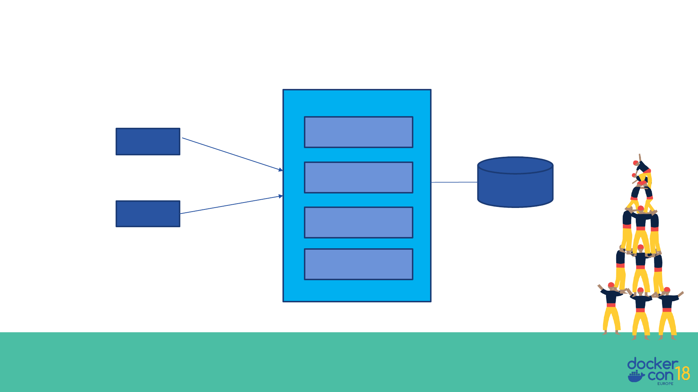
A Close Look at Monolithic
Browser
Client
App
Storefront UI
Module
Catalog
Module
Reviews
Module
Orders
Module
HTML
REST/JSON
Database
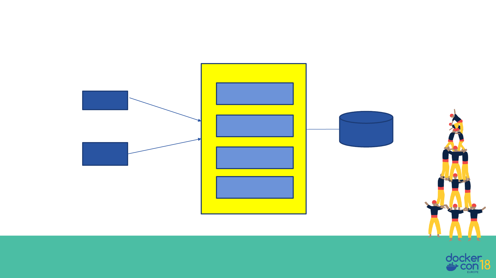
A Close Look at Monolithic
Browser
Client
App
Storefront UI
Module
Catalog
Module
Reviews
Module
Orders
Module
WAR
Tomcat
HTML
REST/JSON
Database

Simple to Develop, Test, Deploy & Scale
- Simple to develop because of all the tools and IDEs support to that kind
of application by default.
- Easy to deploy because all components are packed into one bundle.
- Easy to scale the whole application.
Benefits of Monolith

- Very difficult to maintain
- One component failure will cause the whole system to fail.
- Very difficult to understand and create the patches for monolithic applications.
- Adapting to new technology is very challengeable.
- Take a long time to startup because all the components need to get started.
Disadvantages of Monolith
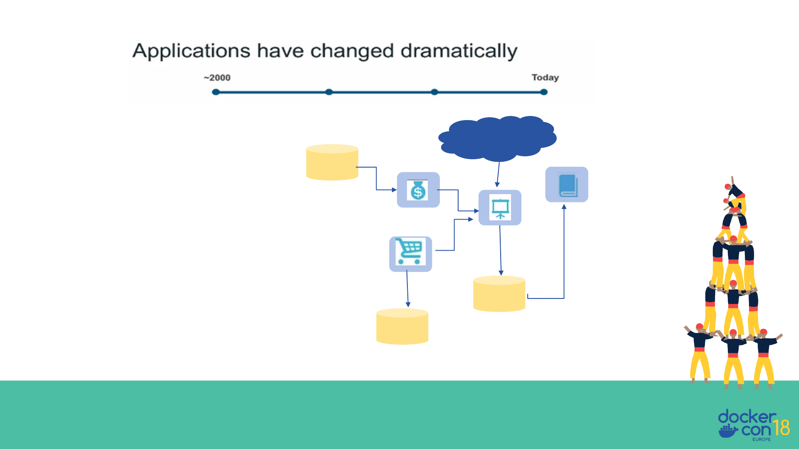
Today
- Apps are constantly developed
- Built from loosely coupled components
- Newer version are deployed often
- Deployed to a multitude of servers
Customer/
Clients/
Users
Data
Storage
Data
Storage
Data
Storage
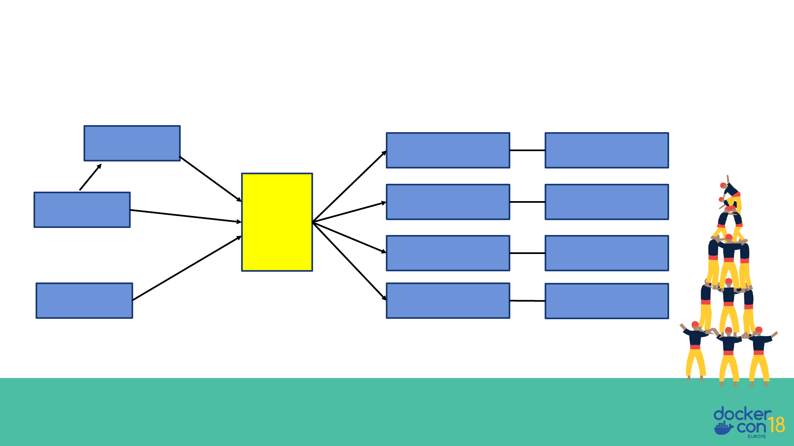
Microservice Architecture
Catalog
Service
Reviews
Service
Order
Service
…
Service
Catalog Database
Reviews
Database
Order
Database
…
Database
API
Gateway
Storefront UI
Browser
Mobile
Device
REST
REST
HTML
REST

- Can scale independent microservices separately. No need to scale
the whole the system
- Can use the latest technologies to develop the microservices.
- One component failure will not cause entire system downtimes.
- When developing an overall solution we can parallel the
microservices development task with the small teams. So it helps to
decrease the development time.
Benefits of Microservices

Once upon a time…a Software Stack

Now much more distributed & complex…

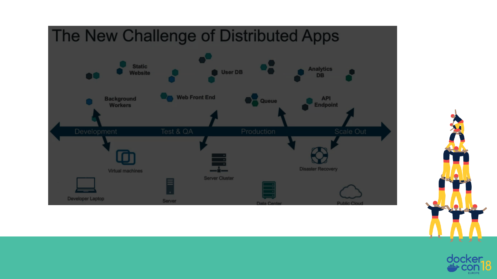
Shipping Code is damn too hard

An Effort to solve the problem Complexity
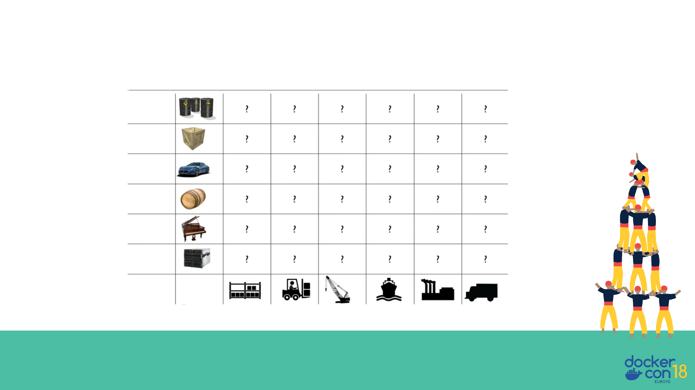
Every possible good to ship X Every Possible way to Ship
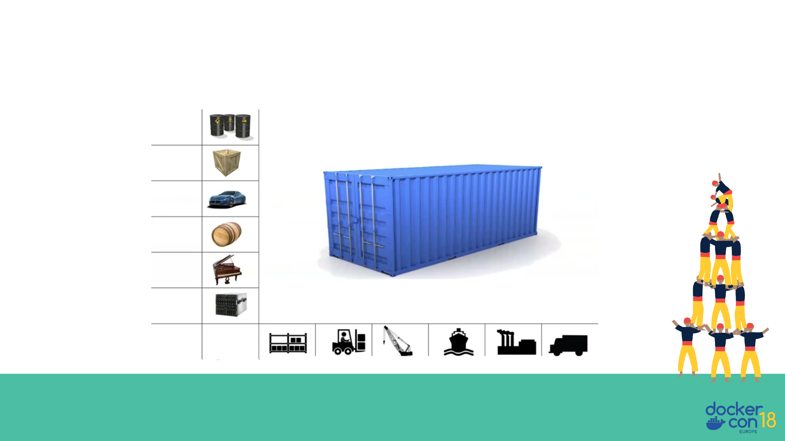
Enter….Internodal Container
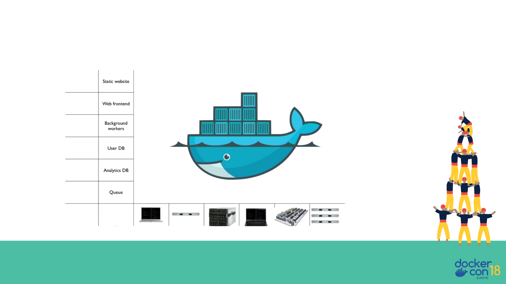
That’s what Docker is all about..

What is Docker and what
problem does it solve?

What is Docker?
Refers to several things in 2019
Ø Docker as a “Company”
Ø Docker as a “Product”
Ø Docker as a “Platform”
Ø Docker as a “CLI Tool”
Ø Docker as a “Computer Program”

• Standardized packaging for
software and dependencies
• Isolate apps from each other
• Share the same OS kernel
• Works for all major Linux
distributions
• Containers native to Windows
Server 2016 & 1809
What is Docker?

Docker Product Offerings

History of Docker
Ø A Company as well as Product – 6 Years Old company
ØDeveloped by DotCloud Inc. ( Currently Docker Inc.)
ØA Framework they built their PaaS upon.
ØReleased it as open source 3 and 1/2 years back
ØCross-platform nature and friendliness towards System Admin and Developers
ØPossible to set up in any OS, be it Windows, OSX, Linux, Solaris - It work the same
way
Ø Guaranteed to run the same way - Your development desktop, a bare-metal server,
virtual machine, data center, or cloud

Today Docker runs on

Traditional Software
Development WorkFlow
(without Docker)
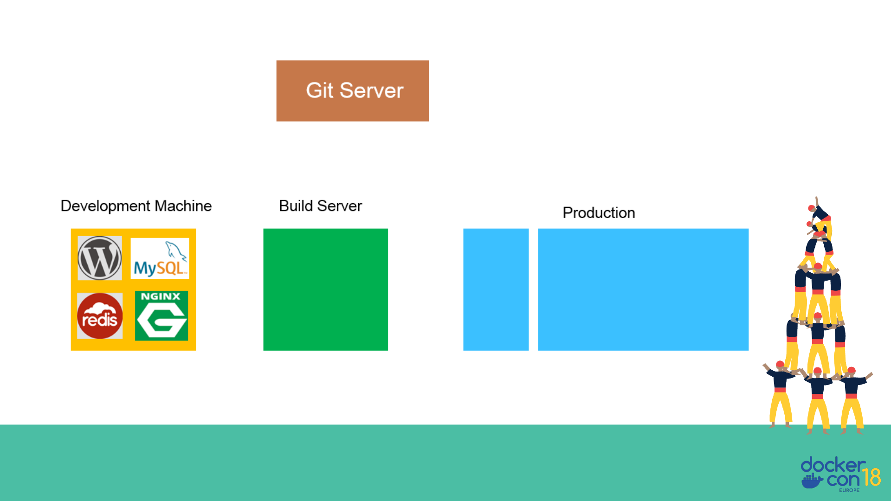


Traditional Software
Development WorkFlow
(with Docker)


Docker Vs VM

Docker Containers are NOT VMs

Virtual Machine
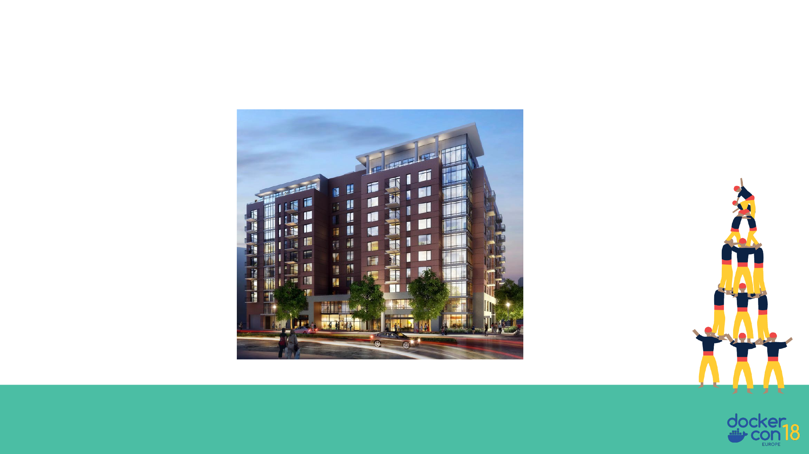
Containers

Docker Container Vs VM

Comparing Docker & VM
Virtual Machines Docker
Each VM runs its own OS Container is just a user space of OS
Boot up time is in minutes Containers instantiate in seconds
VMs snapshots are used sparingly Images are built incrementally on top
of another like layers. Lots of
images/snapshots
Not effective diffs. Not version
controlled
Images can be diffed and can be
version controlled. Docker hub is like
GITHUB
Cannot run more than couple of VMs
on an average laptop
Can run many Docker containers in a
laptop.
Only one VM can be started from one
set of VMX and VMDK files
Multiple Docker containers can be
started from one Docker image

Docker Vocabulary


Image Layers
Kernel
Alpine Linux
Install Python and Pip
Upgrade Pip
Copy Requirements
Install Requirements
…

Basic Docker CLIs
Pulling Docker Image
$ docker pull ajeetraina/hellowhale
Listing out Docker Images
$ docker image ls
Running Docker Containers
$ docker run –d –p 5000:5000 –-name hellowhale ajeetraina/hellowhale
Stopping the container
$ docker stop hellowhale (or <container id>)

Using Docker – Build,
Ship & Run WorkFlow
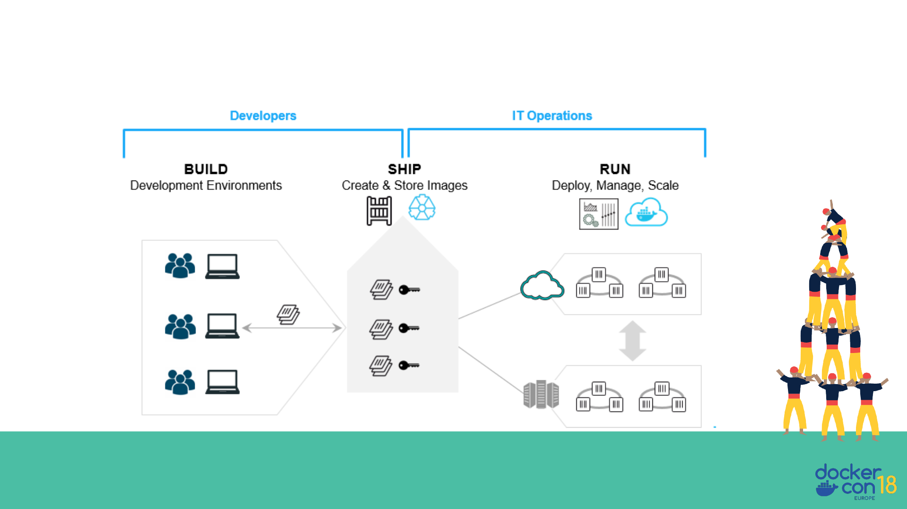
Build. Ship. Run.

Building Docker Containers &
Microservices

Introducing Dockerfile
Series of instructions to build Docker Images
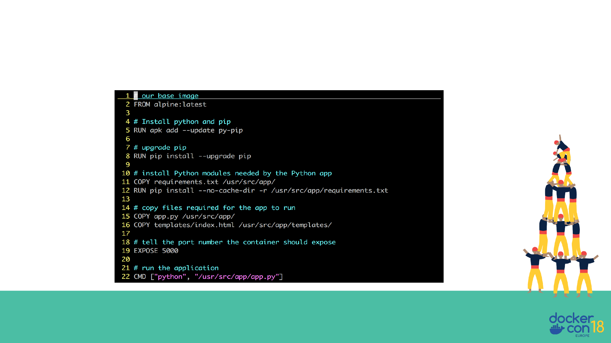
Dockerfile – Example
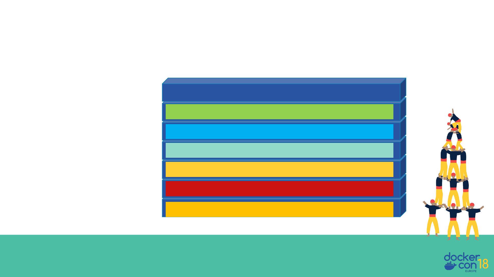
Each Dockerfile creates a Layer
Kernel
Alpine Linux
Install Python and Pip
Upgrade Pip
Copy Requirements
Install Requirements
…

Compose is a tool for defining and running multi-container Docker applications
Docker Compose

- Running WordPress Application using Docker Compose
Demo


Thank You